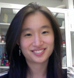

CAURS 2011-2012 Inter-School Board
Directors
Faraz Khan – khanf@uchicago.edu Stephen Xue – xue@uchicago.edu
DePaul University
Kelly Mueller – kmuell16@mail.depaul.eduIllinois Institute of Technology
Amanda Rapacz – arapacz@hawk.iit.eduSydney Williams – swillia9@hawk.iit.edu
Loyola University Chicago
Kelly Brandstatt – kbrandstatt@luc.eduJackie Moloney – jmoloney@luc.edu
Northwestern University
Jeffrey Heiferman – jheiferman@u.northwestern.edu
Michael Reddick – MichaelReddick2013@u.northwestern.edu
Felix Richter – felixrichter2013@u.northwestern.edu
Madhav Suresh – madhav@u.northwestern.edu
Michael Reddick – MichaelReddick2013@u.northwestern.edu
Felix Richter – felixrichter2013@u.northwestern.edu
Madhav Suresh – madhav@u.northwestern.edu
The University of Chicago
Grace Chung – gchung@uchicago.eduTsung Ming (Johnny) Hung – tmhung@uchicago.edu
Bo-Shiun Lai – boshiun@uchicago.edu
Emily Leung – emilyleung@uchicago.edu
Dagmara Moscoso – dmoscoso@uchicago.edu
Grace Park – parkgra3@uchicago.edu
Eileen Shiuan – eileenshiuan@uchicago.edu
Navi Singh – navtej@uchicago.edu
Yuwen Wu – yewU552@uchicago.edu
The University of Illinois at Chicago
Aimee Bobko – abobko2@uic.eduSyed Khalid – skhali4@uic.edu
Amber Langston – alangs2@uic.edu
D'Feau Lieu – lieu1@uic.edu
Kelly Brandstatt

Kelly is a senior at Loyola University Chicago majoring in Psychology and minoring in Neuroscience, Biology, and Studio Art. She is originally from Carol Stream, IL. Kelly is interested in applied social psychology and cognitive neuroscience, and is currently involved with two research labs at LUC, investigating self and group awareness, social justice, creativity, and neuroscience. Outside of school, Kelly enjoys being president of Loyola's Habitat for Humanity chapter, distance running, and baking. After college, she plans on getting her Ph.D. in cognitive neuroscience. This is Kelly's second year on the ISB.
Aimee Bobko

Aimee is a senior majoring in Bioengineering with a concentration in Cell and Tissue Engineering at the University of Illinois at Chicago. She is from Tinley Park, IL and studies the application of engineering principles to biological systems. Aimee is a member of the Tau Beta Pi Engineering Honor Society, Associate Editor for the Undergraduate Bioengineering Student Journal, a Resident Assistant (RA) in one of the campus residence halls, and a participant in the basketball intramural sports program. Aimee gave both and oral and a poster presentation at CAURS last year with her project on the design for a mechanically powered nebulizer. After graduation, Aimee plans on attending medical school in the hopes of becoming a surgeon.
Grace S. Chung

Grace is a fourth-year at the University of Chicago, majoring in Biological Sciences. She grew up in Chicago and attended the University of Chicago Laboratory High School. She has worked as a research assistant at the Program on Medicine and Religion at the University of Chicago since the summer of 2008. Her studies in the lab revolve around how physicians' religious beliefs influence their clinical decision-making and have culminated in two poster presentations at CAURS. After graduation, she hopes to attend medical school and to continue research in bioethics. This is Grace’s first year on the Inter-School Board.
Jeffrey Heiferman

Jeffrey is a sophomore at Northwestern University majoring in Biological Sciences. He is currently working in the laboratory of Dr. David Bentrem, conducting research on pancreatic and colorectal cancer. In his spare time, Jeffrey enjoys geocaching and developing iOS apps with his software group, GreenGuy Games. This is Jeffrey’s second year on the ISB and he is very excited to be back.
Tsung Ming (Johnny) Hung

Johnny is a third-year Visual Arts and Biological Sciences double major at the University of Chicago. Born in Taiwan and raised in Central America and Texas, Johnny is interested in photography, fencing, theater, community volunteering, and working with the American Cancer Society’s Relay for Life. Last year, Johnny presented a poster at CAURS, and this is his first year on the ISB. Johnny plans to take a gap year after college and to then obtain either an M.D/.M.P.H or an M.D./Ph.D.
Syed Khalid

Syed is a senior at the University of Illinois at Chicago majoring in Neuroscience. Syed has been heavily involved in research since his sophomore year and has worked on a wide array of projects. After graduation, Syed hopes to enter an M.D./Ph.D. program here in Chicago, and to continue to contribute to science. Syed presented a poster last year at CAURS, and this is his first year on the Board. He is very excited to be a part of the ISB and to be able to help promote undergraduate research around Chicago.
Faraz Khan

Faraz is a fourth-year Biological Sciences major at the University of Chicago. In his spare time, Faraz enjoys long distance running, playing basketball, keeping up with the Chicago Bulls, and reading Eastern philosophical works. He has worked in multiple research labs and is listed as second author on a recently submitted publication to the applied chemistry journal, Angewandte Chemie. Faraz has been involved with CAURS since 2009, serving as a volunteer, Board member, and now Director. Faraz is interested in the intersection between science and business and will be involved with full-time recruiting for healthcare consulting firms in the fall.
Bo-Shiun Lai

Bo-Shiun is a third-year at the University of Chicago, double majoring in Biological Sciences and English Literature. Born in Taipei, Taiwan, Bo immigrated to Vancouver, British Columbia, Canada at the age of 11. He is in interested in microbiology and parasitology, particularly the parasite Toxoplasma gondii, and conducts research at the Toxoplasmosis Research Institute at the U of C. In addition, Bo is involved in community service at the La Rabida Children's Hospital and leadership development at the University of Chicago Community Service Center. Bo gave both an oral presentation and a poster presentation at CAURS 2011; this is his first year on the Board. After college, Bo hopes to get a Ph.D. in Pathology at Cambridge and an M.D. at a medical school in Canada afterward.
Amber Langston

Amber is a senior at the University of Illinois at Chicago majoring in Bioengineering with a concentration in Bioinformatics. She grew up in Midland, Michigan and moved to Illinois when she was 14, where she graduated from Warren Township High School in Gurnee, IL. Amber and her research group participated in CAURS 2010 and gave both oral and poster presentations. Amber hopes to do research in the field of genetics after she graduates. This is her first year on the Inter-School Board.
Emily Leung

Originally from Vancouver, British Columbia, Emily is a fourth-year at the University of Chicago majoring in Biological Sciences and minoring in Music. Emily has always been interested in how genetics play a role in human psychiatric disorders and has been working in Dr. Abraham Palmer’s lab in the Department of Human Genetics at the U of C since her second year year. Last year, she presented her current research project about fear and anxiety in mice at CAURS. Outside of her work in the laboratory, Emily enjoys exploring new restaurants in Chicago, being involved in the music community on campus and in Hyde Park, and cooking. After graduation, Emily plans to attend medical school. This is Emily’s first year on the ISB.
D’Feau Lieu

D’Feau is a senior at the University of Illinois at Chicago majoring in Biological Sciences and minoring in Political Sciences. He was born and raised in the Chicagoland area, and attended Maine South High School. D’Feau enjoys traveling, trying new foods, and learning new things. He also enjoys running; having completed two Chicago Marathons with plans to run more. D’Feau presented a poster at CAURS 2011, and this is his first year on the Board. After college, D’Feau plans to pursue a career in medical research.
Kelly Mueller

Kelly is junior at DePaul University majoring in Chemistry, with a concentration in Biochemistry and a minor in Biology. She was born and raised in the Chicagoland area. Outside of classes and homework, Kelly enjoys spending her time with her friends and family, running, biking, and volunteering at Children’s Memorial Hospital. After college, Kelly plans to pursue a career in the health science field. This is Kelly’s second year as a member of the Board and she is very excited to be involved with CAURS for another year!
Jackie Moloney

Jackie is a senior at Loyola University Chicago, majoring in Psychology and minoring in Spanish Language and Anthropology. She is originally from DeKalb IL, which also happens to be where barbed wire was invented! Jackie is very interested in social psychology, particularly in topics concerning the self, close relationships, and self-esteem. She plans on attending graduate school to obtain a Ph.D. in social psychology after college. In addition, Jackie loves distance running and being involved in undergraduate research. This is her second year as a member of the Board.
Dagmara Moscoso

Born and raised in Elk Grove, Illinois, Dagmara is a Biological Sciences major specializing in Neuroscience and Endocrinology at the University of Chicago. A distance runner and participant in cross-country and track since the age of nine, Dagmara is very passionate about running. In addition, she is very interested in the biological sciences and translational research. After college, she plans on applying to medical school. Ultimately, she hopes to become a physician-scientist and to be able to actively work towards promoting healthcare and research abroad through international clinical missions.
Grace Park

Grace hails from Lake Geneva, Wisconsin, and is a second-year Biological Sciences and History, Philosophy, and Social Studies of Science and Medicine (HIPS) major at the University of Chicago. Her research experience involves antibody-directed enzyme prodrug therapy and oncological immunostaining. Aside from her vast fascination with medicine, she also loves anything associated with oceans. Some of her interests include journalism, history, sports, world cultures, Improv, her mother’s cooking, and saying yes. Grace has previously presented at CAURS, and this is her first year on the Board. After college, Grace plans to pursue medicine.
Amanda Rapacz

Amanda is a sophomore from St. Paul, Minnesota majoring in Chemical Engineering at the Illinois Institute of Technology. She has interned with Environment Minnesota, working on their Solar Works campaign and supporting the EPA and the Clean Air Act. After graduation, she plans on working with an environmental organization to help implement renewable energy options. Outside of school, Amanda enjoys watching comedies and playing volleyball and golf. This is her first year as a Board member.
Michael Reddick

Michael is a junior from Peoria, IL majoring in Chemical and Biological Engineering with a minor in Biotechnology at Northwestern University's McCormick School of Engineering and Applied Science. He currently works in Dr. Keith Tyo's lab group, researching intracellular communication and signaling in microbes. Outside of the lab, Michael enjoys playing viola in the Northwestern University Philharmonia and being involved with different student groups on campus. After completing his undergraduate studies, he hopes to work towards a Ph.D. and continue synthetic biology research in graduate school, and to ultimately become a professor. Michael is new to CAURS, but hopes to make a positive impact in undergraduate research as a part of the ISB this year.
Felix Richter

Felix is a junior at Northwestern University majoring in Integrated Science, Biology, and Chemistry with Physiology and Materials Science & Nanotechnology tracks. He was born in Germany but grew up in Chicago. At school, Felix conducts research at the intersection of nanotechnology and oncology, is treasurer of Engineering World Health, and volunteers with seniors and children in various healthcare settings. Outside of school, Felix enjoys biking, hiking, camping, travelling, and spending time with friends. This is Felix’s first year on the ISB and he is very excited to be able to represent Northwestern.
Eileen Shiuan

Eileen is a third-year Biochemistry and Biological Sciences double major at the University of Chicago. She is from the San Francisco Bay Area and now lives near Boston. Eileen is a Resident Assistant in the College at the U of C, and her interests include oncology research, health care, pharmacology, swimming, and water polo. After college, she hopes to pursue an M.D./Ph.D, focusing on cancer research and treatment. Eileen was a volunteer at CAURS 2011, and this is her first year on the Board.
Navi Singh

Navi is a third-year Economics major at the University of Chicago. He has conducted research in the Department of Neurobiology at the University of Chicago and in Behavioral Science and Marketing at the University of Chicago Booth School of Business. Navi’s interests include the pharmaceutical industry, business, and writing. After college, he hopes to pursue an MBA with a focus in entrepreneurship. Navi volunteered at CAURS 2011, and this is his first year on ISB. He is originally from Detroit, Michigan.
Madhav Suresh

Madhav is a junior from Chicago, IL majoring in computers at Northwestern University's McCormick School of Engineering and Applied Science. He currently works in the Prescience lab making computers go vroom. After completing his undergraduate studies, he is unsure as to what he wants to do. This is Madhav's first year on the ISB.
Sydney Williams

Sydney is a third-year Biomedical Engineering major at Illinois Institute of Technology from Morro Bay, California. She enjoys school and, in her free time, dancing; going on bike rides, long walks, and hikes; and going out with her friends. This is Sydney’s third year on the ISB; though she was studying abroad last year and missed the symposium, we’re happy to have her back! After college, Sydney hopes to attend graduate school for biomedical engineering or computational neuroscience and to eventually conduct research and teach.
Yuwen Wu
Yuwen is a fourth-year Biological Sciences major and Statistics minor at the University of Chicago. As last year’s Vice-President of Phoenix Biology, the undergraduate biology interest group at the U of C, she joined the Inter-School Board in the fall of 2010 after being asked by CAURS to help organize and raise awareness of the symposium at the U of C and. Yuwen is applying to neuroscience graduate programs this fall and plans to continue a career in academia.
Stephen Xue

Stephen is a fourth-year Biological Sciences major at the University of Chicago. A native of Southern California, Stephen moved to Louisiana at 14, where he acquired a love of ribs and baked beans, country music, and SEC football. Stephen is passionate about biology and the biomedical sciences and has worked in a number of research laboratories since high school. In addition, he has presented at CAURS and, more recently, has been a member of the Inter-School Board. Stephen will be attending medical school next fall and plans to ultimately become a physician-scientist.
 Up
Up